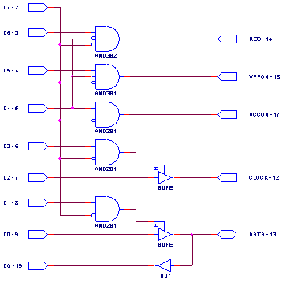

Programátor procesorů PIC
Milan Horkel
Programátor PICPGR3 je malý vývojový programátor pro programování procesorů PIC firmy MICROCHIP. Umožňuje programované zařízení spustit bez odpojování programátoru a může jej resetovat i napájet.

1. Technické parametry
| Položka | Hodnota |
|---|---|
| Hruška Bluma |
Modrá Hnědá |
| Jablko | Barvy jako seznam:
|
| Samotná buňka | |
| Sloučená buňka | |
| Parametr | Hodnota | Poznámka |
|---|---|---|
| Napájení | +15V | Ochrana proti přepólování |
| Spotřeba | 80mA / 100mA | Bez připojené aplikace / při programování |
| Rozměry | 71 x 61 x 20 | Výška nad upevňovací deskou, bez přečnívajícího konektoru |
2. Popis konstrukce
2.1. Úvodem
Programátor PICPGR3 vychází ze starších verzí programátoru, je s nimi funkčně kompatibilní a na rozdíl od nich je mechanicky řešen jako modul pro stavebnici.
Programátor umožňuje programovat vybrané procesory PIC v režimu standardního programování (používá k tomu programovací napětí 12V). Sortiment podporovaných procesorů není dán konstrukcí hardwaru ale tím, co podporuje software.
Programátor umožňuje aplikace s procesory PIC nejen programovat v zapojení ale i přímo spouštět, resetovat i pouze napájet napájecím napětím +5V a to bez odpojování programovacích vodičů (to kupodivu neumí zdaleka každý programátor ale vývojář programů to velmi ocení).
2.2. Zapojení modulu
Napájecí napětí programátoru (konektor J1) by mělo být +15V aby byl programátor schopen generovat programovací napětí VPP o hodnotě +12.5V. Tato hodnota je vyžadována pro programování procesorů s OTP pamětí. Procesory s pamětí FLASH nejsou tak striktní co se týká velikosti VPP protože VPP používají pouze pro aktivaci programovacího režimu a stačí, pokud je podstatně větší než základní napájecí napětí VDD (pozor, neplatí to pro některé starší procesory, které měli starší provedení FLASH či EEPROM paměti).
Napájecí napětí +5V pro elektroniku programátoru se získává ve stabilizátoru U1 a je používáno i pro napájení cílové aplikace. Spínání napájení pro cílovou aplikaci zajišťují tranzistory Q1 a Q2 a ruční spínač SW1.
Programovací napětí VPP o hodnotě +12.5V stabilizuje U2 a spínají Q3 a Q4. Tranzistor Q5 aktivuje MCLR# (RESET) procesoru. Vzhledem k tomu, že signál MCLR# i programovací napětí VPP sdílejí společný vývod procesoru MCLR#/VPP, musí být zajištěno, že nedojde k aktivaci signálu MCLR# současně s programovacím napětím VPP. To zajišťuje ochranná logika, která je realizována v obvodu GAL U3.
V obvodu GAL je kromě ochranné logiky realizován i třístavový budič řídících signálů. Volné vývody obvodu GAL jsou připraveny pro budoucí rozšíření. Odpory R14, R15 a R16 zajišťují klidový stav na vstupech obvodu GAL tak, aby programátor byl v neaktivním stavu pokud není připojen k počítači PC. Na rychlosti obvodu GAL nezáleží, vyhoví kterýkoli GAL16V8 v pouzdru DIL.
Propojovací kabel mezi PC a PICPGR3 je zapojen 1:1 samec-samec.
2.3. Mechanická konstrukce
Programátor je proveden jako standardní stavebnicový modul.


2.4. Zapojení obvodu GAL
Verze GAL4.EQN a jeho schématický ekvivalent.

2.5. Programátorský model
Programátor se připojuje na LPT port PC. Bázové adresy řídících registrů LPT portů ukládá BIOS počítače do paměti na adresy 0:408H (hodnota 16 bitů) a obvykle bývá 3BCH, 378H nebo 278H.
Používá se nejzákladnější jednosměrný režim LPT portu. Řídící registry LPT mají pak tento význam:
3BCH/378H/278H Data směrem do tiskárny (v programátoru signály D0 až D7)
- bit 0 – signál D0 – DATA
- bit 1 – signál D1 – DATA output anable
- bit 2 – signál D2 – CLOCK
- bit 3 – signál D3 – CLOCK output enable
- bit 4 – signál D4 – VCCON
- bit 5 – signál D5 – VPPON (lze jen spolu s VCCON)
- bit 6 – signál D5 – RESET (lze jen není-li VPPON)
- bit 7 – signál D7 – musí být 0 aby byl programátor aktivní
3BEH/37AH/27AH Řízení tiskárny (v programátoru se nepoužívá)
3BDH/379H/279H Čtení stavu tiskárny (používá se jen 1 signál)
- bit 6 – signál ACK – čtená data DQ alias DATA
3. Osazení a oživení
3.1. Osazení

| Reference | Název |
|---|---|
| Odpory | |
| R9,R10,R11,R12 | 100 |
| R4,R13 | 470 |
| R1,R2,R3,R5,R6,R7 | 1k |
| R8,R14,R15,R16 | 4k7 |
| Kondenzátory | |
| C2,C3,C5,C6 | M1 |
| C4 | 10uF/35V |
| C1 | 220uF/25V |
| Diody | |
| D1 | 1N4007 |
| D2 | 1N4148 |
| D3 | LED3mm, zelená |
| D4 | LED3mm, červená |
| D5 | BZX85V006.2 |
| Tranzistory | |
| Q1,Q3,Q5 | BC337 |
| Q2,Q4 | BC640 |
| Integrované obvody | |
| U1 | LM7805T |
| U2 | LM78L12Z |
| U3 | GAL16V8 |
| Mechanické součásti | |
| J1 | K375A |
| J2 | DB25F_90 |
| J3 | JUMP3 |
| J4 | PIC_ISP |
| J5 | JUMP2 |
| SW1 | P-B143 |
3.2. Oživení
Pokud jsou použité správné součástky (obvod GAL musí být naprogramovaný !) a není chyba v zapojení (zkraty či jiné chyby) bude programátor fungovat na první zapojení.
Základní oživení se provádí pomocí laboratorního zdroje. Nejprve přesuneme vypínač SW1 do vypnutého stavu (směrem k LED indikátorům). Při postupném zvyšování napájecího napětí kontrolujeme, zda stabilizátor U1 stabilizuje napětí +5V a zda stabilizátor U2 stabilizuje na cca +12.7V. Spotřeba programátoru by měla být řádu do 100mA (konkrétní hodnota záleží na tom, jakou spotřebu má použitý obvod GAL.
K dalšímu oživování používáme testovací program TSTPGR.EXE, který umožňuje postupnou aktivaci jednotlivých signálů a jejich kombinací. Jednotlivé položky testu vypisují jednak co program nastavil a informaci o tom, co by se mělo objevit na jednotlivých pinech programovacího konektoru.
Stav H je napětí kolem +4V, stav L je obvykle napětí pod +0.1V a stav X je napětí kolem +3V s tím, že po připojení odporu 10k na zem nebo na napájení +5V dostaneme napětí 0V nebo +5V. Pro testování, zda funguje vstup PGD se na tento pin připojuje GND a VDD přes odpor 10k.
Napětí VDD by mělo být v rozmezí +4.5V až +5.5V a VPP v rozmezí +12V až +13V.
4. Programové vybavení
4.1. Uživatelský návod PICPGR.EXE
Program PICPGR.EXE je DOS program a přímo ovládá zadaný LPT port. V případě procesorů s pamětí FLASH je možné spouštět jej i z DOS okna pod Windows 95/98. Program při spuštění bez parametrů vypíše nápovědu včetně úplného seznamu podporovaných procesorů a možností nastavení přepínačů.
Program zpracovává jednak standardní HEX soubor (takový, který generují obvyklé překladače pro procesor PIC) a alternativně textový soubor, který je výhodný zejména při ladění (vyčtení stavu, vizuální kontrola, definování parametrů v EEPROM paměti a podobně). Součástí datového souboru mohou být data pro paměť programu, pro paměť EEPROM, pro testovací pole i pro konfigurační slovo. Nastavení konfiguračního slova lze (pouze pro procesory s pamětí FLASH) změnit uvedením přepínačů. Různé procesory mají různé přepínače.
Pro většinu akcí je nutné uvést typ procesoru a případně i formát vstupního či výstupního souboru (přepínač HEX nebo TXT). Na pořadí přepínačů nezáleží.
4.1.1. Nápověda
PICPGR
Vypíše úplnou nápovědu včetně seznamu všech podporovaných procesorů, jejich vlastností a přepínačů.
PICPGR <procesor>
Nápověda vypíše vlastnosti procesoru a jeho sady přepínačů pro předefinování stavu konfiguračních přepínačů.
4.1.2. Mazání procesoru
PICPGR ERASE <procesor>
Smaže obsah všech pamětí procesoru i v případě, že je procesor zamčený. Funguje pouze pro procesory s pamětí FLASH.
4.1.3. Čtení procesoru
PICPGR READ <soubor> HEX <procesor>
PICPGR READ <soubor> TXT <procesor>
Přečte obsah všech pamětí procesoru a uloží je do výsledného HEX nebo TXT souboru.
4.1.4. Programování procesoru a verifikace
PICPGR PROGAM <soubor> HEX <procesor>
PICPGR VERIFY <soubor> HEX <procesor>
Provede naprogramování a kontrolu naprogramování procesoru dle zadaného souboru (HEX nebo TXT). Programování automaticky provádí i kontrolu a vypisuje případné nesrovnalosti.
V případě potřeby je možné změnit nastavení konfiguračního slova. Níže uvedený příklad provede naprogramování procesoru PIC16F873 obsahem souboru TEST.HEX ve formátu HEX s tím, že změní konfigurační bit CP (Code Protection) do stavu zapnuto a pole FOSC v konfiguračním slově (konfigurace oscilátoru) nastaví do stavu 01.
PICPGR PROGRAM TEST.HEX HEX PIC16F873 CP_ON FOSC_01
4.1.5. Spouštění aplikace
PICPGR RUN
PICPGR RESET
PICPGR STOP
Zapne napájení a spustí aplikaci, provede reset aplikace a vypne napájení aplikace. Používá se při ladění aplikace při kterém se neodpojuje programovací kabel od laděné aplikace.
4.1.6. Konverze formátu datového souboru
PICPGR CONVERT <vstup> <vystup> HEX <procesor>
PICPGR CONVERT <vstup> <vystup> TXT <procesor>
Převede soubor ve formátu HEX na TXT nebo naopak. Uváděný typ procesoru slouží ke kontrole rozsahu.
4.2. Popis programu
Program je napsaný v jazyce Turbo Pascal verze 6 a vznikl postupným rozšiřováním původního jednoduchého programu pro programování obvodů PIC16F84. Zdrojové texty jsou dostupné a komentované.
Program podporuje kromě programátoru PICPGR i profesionální programátor ALL-03.